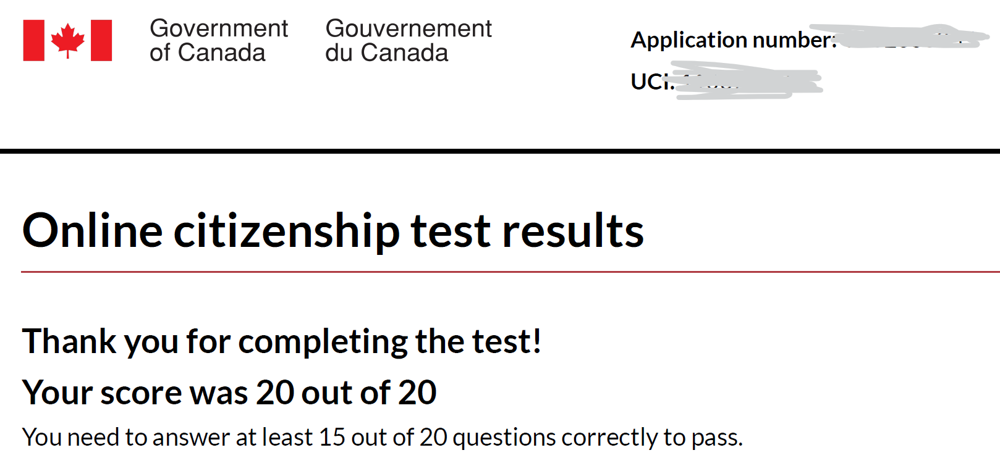
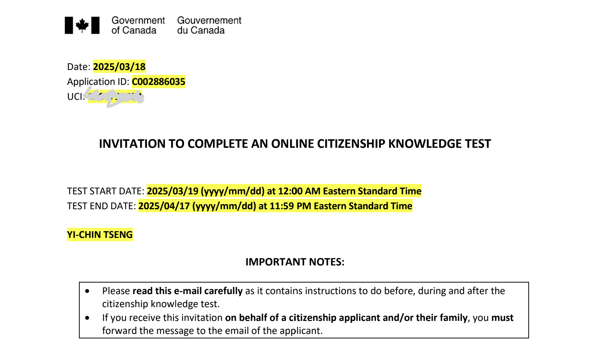
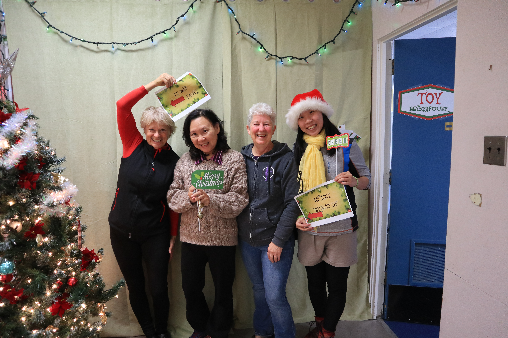
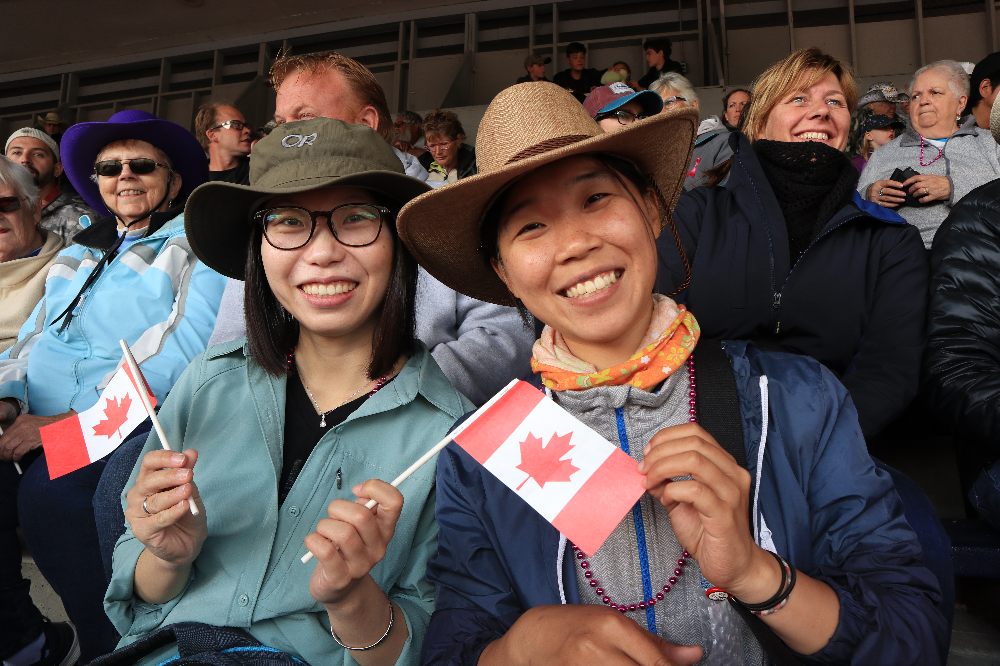
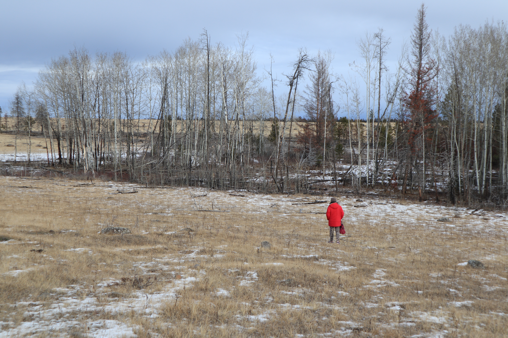

Canadian Citizenship 加拿大公民
通過測驗
順利通過加拿大的公民考試了!!
考試的內容都從 Discover Canada 這本書出來，加拿大政府網站上有免費的 PDF 與 audio file。一開始會拒絕閱讀，先用聽的，大概兩周的時間，每天晚上睡前都會讀一點 Discover Canada，然後配上一章節，甚至是一整集葬送的芙莉蓮(我在想若不是葬送的芙莉蓮我大概準備起來會在更辛苦一些)。在考試前一周，訂閱了一個手機 App 裡面有附 21 次的模擬試題，邊讀書邊用試題來提醒會考的細節，相當的有用。
周六就自己訂了早上九點起床考試，花個大約 15 分鐘就檢查了三回，緊張歸緊張，看到 20 out of 20 那霎那真的有放了一千萬個心的興奮感! 隔天就和 Gintas 到 Jeffrey Lake 上慶祝 :D (今年第一爬，兩個人都很累很開心!)


申請加拿大公民
回想起與加拿大移民署（IRCC）的交手，從 2017 年 8 月 26 號，落地加拿大的那刻就開始了。轉眼又過了一些時日（時光匆匆不等人），好像昨天才經歷收到楓葉卡的興奮，沒想到就到了申請公民的資格了。申請加拿大公民的資格，本人要是永久公民，並在過去的五年之內，在加拿大境內超過三年以上的時間，如果是在成為永久公民之前的居留，則以 50% 計算。經過繁複的出境入境計算（話說我在成為 PR 之後，離開加拿大的天數超多，大部分都是台灣啦!）。
總之，就在今年年初，出發飛去墨西哥之前送出申請啦! 主要是實在不想再改寫申請，要再多加出境的時間。
- 2025/2/7 線上送出申請
- 2/19 通知確認收到公民申請
- 2/27 通知已經在政府的系統上登錄公民申請，並已經開始審核
- 3/18 通知必須在一個月內完成公民考試
- 4/12 通過線上測驗，直接去樓上喝咖啡慶祝

Ch1. Rights and responsibilities of citizenship 責任與義務
大憲章 Manga Carta (Great Charter of Freedoms) in 1215
Habeas corpus, the right to challenge unlawful detention by the state, comes from English common law.
- Conscience and religion - Thoughts, belief, opinion, expression, speech and press - Assembly - Association
加拿大憲章 Canadian Charter of Rights and Freedoms in 1982
The Constitution of Canada was amended in 1982 to entrench the Canadian Charter of Rights and Freedoms, which begin with the words, “Whereas Canada is founded upon principles that recognize the supremacy of God and the rule of law.”
- Mobility right
- Aboriginal people’s right
- Official language rights and minotiry language educational rights
- Multiculturalism
Citizenship responsibilities
There is no compulsory millitary services in Canada. However, there are some responsibilities, including: - Obeying the law - Taking responsibility for oneself and one’s family - Serving on jury - Voting in elections - Helping others in the community - Protecting and enjoying our heritage and environment

Ch2. Who we are 我們是誰
We are the only consititutional monarchy in North America. Our institutions uphold a commitment to Peace, Order, and Good Government, a key phrase in Canada’s original consititutional document in 1867, the British North America Act. The poets and songwriters have hailed Canada as the “Great Dominion”.
Aborigial peoples
The ancestors of Aboriginal peoples are believed to have migrated from Asia many thousands of years ago. From 1800s until the 1980s, the federal government placed many aboriginal children in residential schools to educate and assimilate them into mainstream Canadian culture. Aboriginal languages and cultural practices were mostly prohibited. In 2008, Ottwa formally apologized to the former students.
Today, the term Aboriginal peoples refers to three distinct groups: - Indian/First Nations (65%): who are not Inuit or Metis. - Inuit (4%): which means “the people” in the Inuktitut language.
- Metis (30%): a distinct people of mixed Aboriginal and European ancestry, having their own language, Michif.
English and French
English and French defines the reality of day-to-day life for most people and are the country’s official languages. 18 million Anglophones and 7 million Francophones. New Brunswick is the only officially bilingual province.
- Acadians: the descendants of French colonists who began settling in Maritime provinces and got deported between 1755 - 1763 “Great Upheaval”, during the war between Britian and France.
- Quebecers: the people of Quebec, Anglo-Quebecers.
- Anglophones: English-Canadian.
Diversity in Canada
Canada is often referred to as a land of immigrants. Since the 1970s, most immigrants have come from Asian countries. Chinese languages are the second most-spoken at home, after English. In Vancouver, 13% of the population speak Chinese languages.
The largest religious affiliation is Catholic, followed by various Protestant churches. Canada’s diversity includes gay and lesbian Canadians, who enjoy the full protection of and equal treatment under the law, including access to civil marriage.

Ch3. Canada’s history 歷史
Aboriginal peoples
When Europeans explored Canada they found all regions occupied by native peoples they called Indians, because the first explorers thought they had reached the East Indies. Large numbers of Aboriginals died of European diseases to which they lacked immunity.
The first Europeans
The Vikings from Iceland who colonized Greeland also reached Labrador and the island of Newfoundland. John Cabot, in 1497, was the first to draw a map of Canada’s East Coast.
Jacques Cartier claimed the land for King Francis I. Two captured guides speak the Iroquoian word “Kanata”, meaning “village”. Later the name of “Canada” began appearing on maps.
Royal new France
In 1604, the first European settlement was established by French explorers Pierre de Monts and Samuel de Champlain, in Maine and Nova Scotia (Acadia). The French and Aboriginal people collaborated in the vast fur-trade economy (beaver pelt).
Struggle for a continent
In 1670s, King Charles II of England granted the Hudson’s Bay Company exclusive trading rights over the watershed draining into Hudson Bay. English colonies eventually became richer and more populous than New France. In the 1700s, France and Great Britian battled for control of North America. In 1759, the British defeated the French in the Battle of the Plains of Abraham.
A tradition of accommodation - Quebec Act (1774)
Following the war, Great Britian renamed the colony the “Province of Quebec.” The French speaking people, known as habitants or Canadiens, preserve their way of life in the English-speaking British Empire.
The British Parliament passed the Quebec Act of 1774, one of the constitutional foundations of Canada, to better govern the French majority. The Quebec Act restored French civil law while maintaining British criminal law.
US independence in 1776: united empire loyalists
In 1776, the 13 British colonies to the south of Quebec declared independence and formed the United States. North America was again divided by war. More than 40,000 people loyal to the Crown, called “Loyalists” fled to settle in Nova Scotia and Quebec.
The beginning of democracy - Constitutional Act (1791)
The first representative assembly was elected in Halifax, Nova Scotia, in 1758. Then PEI and New Brunswick. In 1791, The Constitutional Act divided the Province of Quebec to Upper Canada (later Ontario) and Lower Canada (later Quebec). The name Canada became official and collectively known as British North America.
The War of 1812: the fight for Canada
The United States launched an invasion to Canada, which they burned Government House and the Parliament Buildings in York (now Toronto). In retaliation, Robert Ross led an expedition that burned down the White House and other buildings in Washington, D.C. The present-day Canada-USA border is partly an outcome of the War of 1812, which ensured that Canada would remain independent of the US.
Confederation - British North America Act (1867)
In 1840, upper and lower Canada were united as the Province of Canada. The first British North America colony to attain full responsible government was Nova Scotia.
From 1864 - 1867, representatives of Nova Scotia, New Brunswick and the Province of Canada, with British support, worked together to establish a new country. They created two levels of government: federal and provincial. The Province of Canada was split into two new provinces: Ontario and Quebec.
The British Parliament passed the British North America Act, and the Dominion of Canada was officially born on July 1, 1867, which is known as Canada Day. The first prime minister is Sir John Alexander Macdonald.
Challenge in the west (1867 - 1871)
After the Metis uprising in Manitoba and Saskatchewan, PM Macdonald established the North West Mounted Police (NWMP) to pacify the West and assist in negotiations with the Indians, with Regina as the headquarters. Toady, the Royal Canadian Mounted Police (RCMP) are the nationa lpolice force and one of Canada’s best-known symbols.
British Columbia joined Canada in 1871 after Ottwa promised to build a railway to the West Coast, Canadian Pacific Railway (CPR). Afterwards the Chinese were subject to discrimination, including the had tax. The government apologized in 2006.
The first world war & women get the vote (1914)
More than 600,000 Canadians served in the first world war in 1914. At the time of Confederation, the vote was limited to proterty-owned adult white males. The women’s suffrage movement. Its founder was Dr. Emily Stowe, the first Canadian woman to practise medicine in Canada. In 1916, Manitoba became the first province to grant voting rights to women. In 1921, Agnes Macphail became the first woman MP.
Between the wars
The British Empire evolved into a free association of states known as the British Coommonwealth of Nations, including India, Australia, New Zealand, and several African and Caribbean countries.
The stock market crash of 1929, led to the Great Depression or the “Dirty Thirties.” Unemployment reached 27% in 1933. The Bank of Canada was created in 1934 to manage the money supply.
The second world war (1939 - 1945)
Canada joined with its democratic allies in the fight to defeat tyranny by force of arms. In the Pacific war, Japan invaded the Aleutian Islands, attached a lighthouse on Vancouver Island. Regrettably, relocation of Canadians of Japanese origin by the federal government was done after Japan surrendered. The government of Canada apologized in 1988.

Ch4. Modern Canada 現代
Trade trade economic growth
The world’s restrictive trading policies in the Depression era were opened up by such treaties as the General Agreement on Tariffs and Trade (GATT), now the World Trade Organization (WTO). The discovery of oil in Alberta in 1947 began Canada’s modern energy industry. The Canada Health Act ensures common elements and a basic standard of coverage.
International engagement
Canada joined with other democratic countries of the West to form the North Atlantic Treaty Organization (NATO), a military alliance, and wit hthe United States in the North American Aerospace Defence Command (NORAD).
Canada and Quebec
Quebec experienced an era of rapid change in the 1960s known as the Wuiet Revolution. Many Quebecers sought to separate from Canada. In 1963, Parliament established the Royal Commission on Bilingualism and Biculturalism.
After much negotiation, in 1982, the Constitution was amended without the agreement of Quebec. The autonomy of Quebec within Canada remains a lively topic, part of the dynamic that continues to shape our country.
A changing society
Today every citizen over the age of 18 may vote. Canada welcomed throusands of refugees from Communist oppression, including about 37,000 who escaped Soviet tyranny in Hungary in 1956. By the 1960s, one-third of Canadians had origins that were neither British nor French, and took pride in preserving their distinct culture in the Canadian fabric.
Arts and culture in Canada
Emily Carr painted the forests and Aboriginal artifacts of the West Coast. Basketball was invented by Canadian James Naismith in 1891. Many major league sports boast Canadian talent and in the national sport of ice hockey. One of the best hockey players of all time, Wayne Gretzky, played for the Edmonton Oilers from 1979 to 1988. In 1980, Terry Fox, a British Columbian who lost his right leg to cancer at the age of 18, began a cross-country run, the “Marathon of Hope,” to raise money for cancer research.
Great Canadian discoveries and inventions
- Telephone (Alexander Graham Bell)
- Snowmobile
- World system of standard time zones
- Electric light bulb
- Wireless voice message
- Cardiac pacemaker
- BlackBerry cellphone
Ch5. How Canadians Govern 政府
There are three key facts about Canada’s system of government: our country is a federal state, a parliamentary democracy and a constitutional monarchy.
Fedaral state
There are federal, provincial, territorial and municipal governments in Canada. The responsibilities of these levels were defined in 1867 the British North America Act, now known as the Constitution Act.
Every province has its own elected Legislative Assembly, like the House of Commons in Ottawa. The three northern territories do not have the status of provinces, but their governments and assemblies carry out many of the same functions.
- Federal: Prime Minister & members of parliament
- Provincial: Primer & members of the legislature
Parliamentary democracy
The people elect members to the House of Commons in Ottwa and to the provincial and territorial legislatures. Cabinet ministers are responsible to the elected representatives, which means they must retain the “confidence of the House” and have to resign if they are defeated in a non-confidence vote.
Parliament has three parts: 1. Sovereign: Queen or King 2. House of Commons (眾議院) -> made up by members of parliament elected by the people (4 years) 3. Senate (參議院) -> made up by senators, appointed by the Governor General on the advice of the Prime Minister (until age 75)
Constitutional monarchy
As a constitutional monarchy, Canada’s Head of State is Sovereign (Queen or King), who reigns in accordance with the Constitution: the rule of law. As head of the commonwealth, the sovereign links Canada to 53 other nations that cooperate to advance social, economic and cultural progress.
There is a clear distinction in Canada between the head of state (the sovereign) and the head of government (the prime ministor).
The sovereign is represented in Canada by the Governor General (5 years), and represented in Provinces by the Lieutenant Governor (5 years), appointed by the Governor General with the advice of the Prime Minister.
Ch6. Federal elections 選舉
Canadians vote in elections for the people they want to represent them in the House of Commons. Members of the House of Commons are also known as members of Parliament or MPs.
Canada is divided into 308 electoral districts, also known as ridings or constituencies. Canadian citizens who are 18 years old or older may run in a federal election. The people in each electoral district vote for the candidate and political party of their choice.
Voting
You are eligible to vote in a federal election or cast a ballot in a federal referedum if you are:
- a Canadian citizen
- at least 18 years old on voting day
- on the voter’s list (National Register of Electors by Election Canada)
After the election
The leader of the political party with the most seats in the House of Commons is invited by the Governor General to form the government. If the party in power holds at least half of the seats in the House of Common, this is called a majority government; if the party in power holds less than half of the seats in the House of Commons, this is called a minority government.
if a majority of the members of the House of Commons vote against a major government decision, the party in power is defeated, which usually results in the Prime Minister asking the Governor General, on behalf of the Sovereign, to call an election.
The prime minister and the Cabinet ministers are called the Cabinet. The opposition party with the most members of the House of Commons is the Official Opposition or Her Majesty’s Loyal Opposition.
- Conservative Party
- New Democratic Party
- Liberal Party
Other levels of government in Canada
Municipal governments usually have a council that passes laws called “by-laws” that affect only the local community.
Ch7. The justice system 司法
The Canadian justice system guarantees everyone due process under the law. Our judical system is founded on the presumption of innocence in criminal matters, meaning everyone is innocent until proven guilty.
Courts
The supreme court of Canada is our country’s highest court. In most provinces there is an appeal court and a trial court, sometimes called the Court of Queen’s Bench or the Supreme Court.
Police
There are provincial police forces in Ontario and Quebec and municipal police departments in all provinces. The Royal Canadian Mounted Police (RCMP) enforce federal laws throughout Canada and serve as the provincial police in all provinces and territories except Ontario and Quebec.
Ch8. Canada’s symbols 代表物
The Canadian Crown
The crown is a symbol of government, including Parliament, the legislatures, the courts, police services and the Canadian Forces.
Flags in Canada
A new Canadian flag was raised for the first time in 1965. The red-white-red pattern comes from the flag of the Royal Military College, Kingston, founded in 1876. Red and white had been colours of France and England and the national colours of Canada. The Union Jack is our official Royal Flag.
Maple leaf
The maple leaf is Canada’s best-known symbol.
The Fleur-de-lys
It’s said that the lily flower was adopted by the French king in the year of 496. Quebec adopted its own flag, based on the Cross and the fleur-de-lys.
Coat of arms and motto
Canada adopted an official coat of arms and a national motto, meaning “from sea to sea”. The arms contain symbols of England, France, Scotland and Ireland, as well as red maple leaves.
Parliament buildings
The peace tower was completed in the momory of the First World War. The memorial Chamber within the Tower contains the books of rememberance in which are written the names of soldiers, sailors, and airmen who died serving Canada in wars or while on duty.
Popular sports
Hockey is Canada’s most popular spectator sport and is considered to be the national winter sport.
The beaver
The beaver was adopted centuries ago as a symbol of the Hudson’s Bay Company. This industrious rodent can be seen on the five-cent coin, on the coats of arms of Saskatchewan and Alberta, and of cities such as Montreal and Toronto.
Canada’s official languages
English and French are the two official languages and are important symbols of identity. Parliament passed the Official Languages Act in 1969, to establish equality between French and English in Prliament, maintain and develop official language minority communities in Canada, and Promote equality of Fench and English in Canadian society.
national anthem
O Canada… “O Canada! Our home and native land!”
The order of Canada and other honours
Official awards are called honours, consisting of orders, decorations, and medals. Canada started its own honours system with the Order of Canada in 1976. The Victoria cross (V.C.) is the highest honour available to Caiadians.
Ch9. Canada’s economy 經濟
As Canadians, we could not maintain our standard of living without engaging in trade with other nations. Today, Canada has one of the ten largest economies in the world and is part of the G8 group of leading industrialized countries with the US, Germany, the UK, Italy, France, Japan, and Russia. Canada’s economy includes three main types of industries:
- Service industries: More than 75% of working Canadians now have jobs in service industries.
- Manufacturing industries: Making products to sell in Canada and around the world. Our largest trading partner is United States.
- Natural resources industries: forestry, fishing, agriculture, mining and energy.
Canada enjoys close relations with the United States and each is the other’s largest trading partner. Over three-quarters of Canadian exports are destined for the USA.
Ch10. Canada’s regions 地理
Canada is teh second largest country on earth - 10 millions square kilometers. Three ocean line Canada’s frontiers: The Pacific Ocean, Atlantic Ocean, and the Arctic Ocean.
General overview of Canada
Ottwa, located on the Ottwa River, was chosen as the capital in 1857 by Queen Victoria. Today it is Canada’s fourth largest metropolitan area. Canada has 10 provinces and 3 territories. Canada has a population of 34 million people.
Provincial capitals - Atlantic provinces - Newfoundland and Laborador: St Jone’s - Prince Edward Island: Charlottetown - Nova Scotia: Halifax - New Brunswick: Federicton
- Central Canada
- Quebec: Quebec city
- Ontario: Toronto
- Prairie Provinces
- Manitoba: Winnipeg
- Saskatchewan: Regina
- Alberta: Edmonton
- West Coast
- British Columbia: Victoria
- North
- Nunavut: Iqaluit
- Northwest Territories: Yellowknife
- Yukon Territory: Whitehorse
Newfoundland and Laborador
The most easterly point in North America and has its own time zone. The oldest colony of the British Empire and a strategic prize in Canada’s early history. Labradoe also has immense hydro-electric resources.
Prince Edward Idland
The smallest province, known for its beaches, red soil and agriculture, especially potatoes. PEI is the birthplace of Confederation, connected to mainland Canada by one of the longest continuous multispan bridges in the world, the Confederation Bridge.
Nova Scotia
Nova Scotia is the most populous Atlantic Province, with rich history as the gateway to Canada, known for the world’s highest tides in the Bay of Fundy. Halifax has played an important role in Atlantic trade and defence and is home to Canada’s largest naval base. Nova Scotia is home to over 700 annual festivals.
New Brunswick
The province was founded by the United Empire Loyalists and has the second largest river system on North America’s Atlantic coastline, the St. John River system. New Brunswick is the only officially billingual province, and about 1/3 of the population lives and works in French.
Quebec
The vast majority of the population live along or near the St. Lawrence River. More than 3/4 speak French as their first language. The province huge supply of fresh water has made it Canada’s largest producer of hydro-electricity. Montreal, Canada’s second largest city is famous for its cltural diversity.
Ontario
The people of Ontario make up more than 1/3 of Canadians. Toronto is the largest city in Canada. There are five Great Lakes located between Ontario and the US, with Lake Superior the largest freshwater lake in the world.
Manitoba
Manitoba is also an important centre of Ukrainian culture, and the largest Aboriginal population of any province, at over 15%.
Saskatchewan
Once known as the breadbasket of the world and the wheat province, is the country’s largest producer of grains and oilseeds. It’s home to the training academy of the Royal Canadian Mounted Police.
Alberta
The most populous Prairie province. Alberta is the largest poroducer of oil and gas, and the oil sands in the north are being developed as a major energy source.
British Columbia
About half of all the goods produced in BC are forestry products, including lumber, newsprint, and pulp and paper products - the most valuable forestry inductry in Canada. BC has the most extensive park system in Canada, with about 600 provincial parks.
Yukon
Thousands of miners came to the Yukon during the Gold Rush of the 1890s. Yukon holds the record for the coldest temperature ever recorded in Canada (-63C).
Northwest Territories
Yellowknif is called the diamond capital of North America. More than half of the population is Aboriginal.